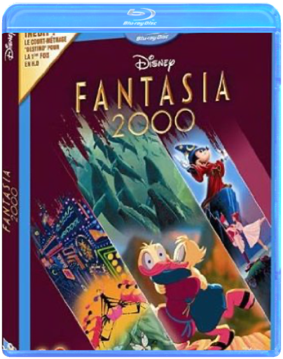
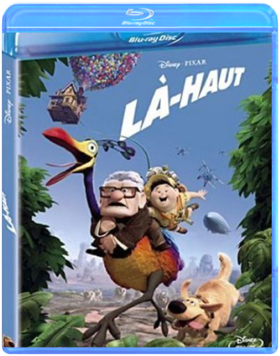

Le Geant De FerBrad Bird Le Geant De FerBrad Bird  Hogarth Hughes just rescued an enormous robot that fell from the stars to Earth. Now young Hogarth has one very big friend and an even bigger problem: how do you keep a 50-foot-tall, steel-eating giant a secret?  alice au pays des merveillestim burton alice au pays des merveillestim burton Alice, désormais âgée de 19 ans, retourne dans le monde fantastique qu'elle a découvert quand elle était enfant. Elle y retrouve ses amis le Lapin Blanc, Bonnet Blanc et Blanc Bonnet, le Loir, la Chenille, le Chat du Cheshire et, bien entendu, le Chapelier Fou. Alice s'embarque alors dans une aventure extraordinaire où elle accomplira son destin : mettre fin au règne de terreur de la Reine Rouge.  james bond - intégrale 50ème anniversairemartin campbell james bond - intégrale 50ème anniversairemartin campbell De Campbell Martin - Avec Connery Sean - Moore Roger - Craig Daniel - 50âme anniversaire - 22 films - coffret 44 dvd - edition limitée  harry potter, 1 : à l'école des sorcierschris columbus harry potter, 1 : à l'école des sorcierschris columbus Harry Potter à l'école des sorciers [Blu-Ray]  harry potter, 2 : et la chambre des secretschris columbus harry potter, 2 : et la chambre des secretschris columbus Harry Potter et la Chambre des Secrets [Blu-Ray]  l'aventure intérieurejoe dante l'aventure intérieurejoe dante Quick Shipping !!! New And Sealed !!! This Disc WILL NOT play on standard US DVD player. A multi-region PAL/NTSC DVD player is request to view it in USA/Canada. Please Review Description. fantasia 2000walt disney Beethoven, Ottorino Respighi, Gershwin… Walt Disney désirait que Fantasia ne soit que le début d'une symphonie infinie et que l'on poursuive cette expérience en composant régulièrement de nouveaux ballets, en alliant à la magie de la musique des découvertes à venir en matière d'animation. C'est désormais chose faite. Faisant appel aux images de synthèse et aux dernières innovations technologiques, la relève artistique des studios Disney nous entraîne dans une nouvelle série d'aventures tout aussi fabuleuses que celle du premier Fantasia. On plonge en 5.1 avec des baleines qui s'envolent, on swingue en 1.85 16/9 dans les couloirs du métro new-yorkais, on suit, avec enthousiasme, les cabrioles d'un amusant petit flamant rose et, bien sûr, on retrouve notre adorable Mickey qui fait encore des siennes. Un dessin animé sur les instruments de musique, est proposé en supplément. —Sophie Wittmer là-hautwalt disney Contenu et bonus : Blu-ray 2 disques  walt disney, 42 : toy story 1walt disney walt disney, 42 : toy story 1walt disney A chaque anniversaire d'Andy, c'est la même chose ses jouets redoutent l'arrivée d'un nouveau venu qui pourrait les supplanter dans le coeur du petit garçon. Cette année là, la pire des prévisions va se réaliser : Buzz l'éclair, un cosmonaute électronique, fait une entrée triomphale. Bouleversant l'ordre des choses, il devient vite le héros d'Andy et des autres jouets. Détrôné et déshonoré, Woody le cow-boy est dès lors prêt à tout pour retrouver sa place de premier dans le coeur d'Andy et son statut de chef des jouets.  walt disney, 53 : toy story 2walt disney walt disney, 53 : toy story 2walt disney Privé de camp de vacances avec Andy parce que son bras est déchiré, Woody est relégué sur l'étagère du garçonnet. S'échappant de la maison pour sauver un autre jouet d'un vide-grenier, un collectionneur l'aperçoit et le kidnappe... |

 Made with Delicious Library
Made with Delicious LibraryNancy, State zipflap congrotus delicious library Thomas, Julien